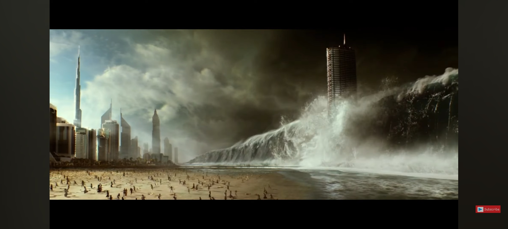
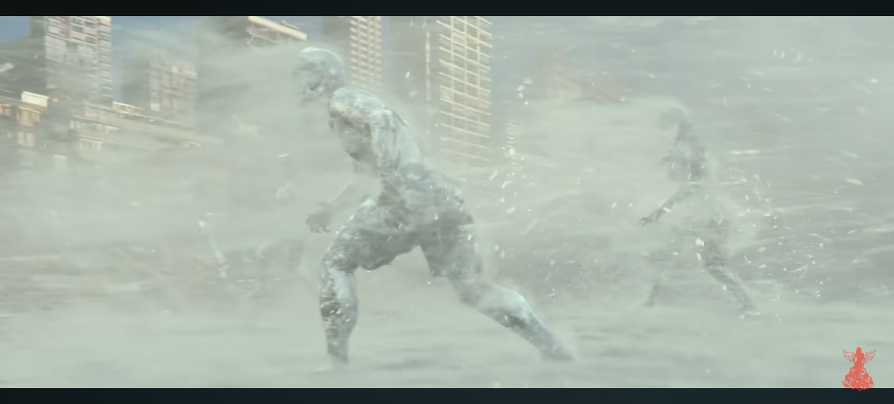
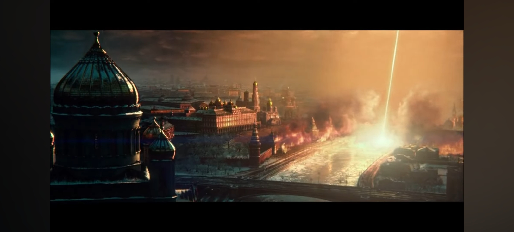
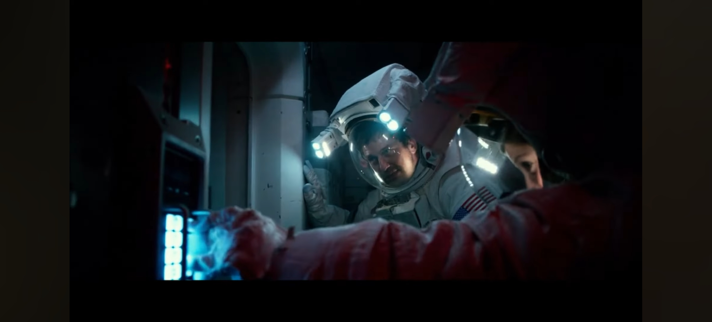

Favourite Scenes In Geostorm
My favourite scenes in the movie GEOSTORM are
| SCENE | PICTURE | EXPLANATION |
|---|---|---|
| Tsunami in Dubai |  | The scene shows the unnerving effects of the satellite malfunction, causing an unusual shift in the weather which triggered a tsunami. The people from the tall building saw how the tsunami impacts the whole city |
| Frozen Rio de Janeiro |  | The visual effects from this scene is truly incredible, seeing how the surfing and the running people on the beach froze as the try to escape the sudden burst of ice from the ocean |
| Heatwave in Hong Kong |  | This scene was shocking when i first saw it, watching how the heat wave from the satellite destroy and cause chaos inside of Hong Kong. |
| Hannah shows up to help Jake input the code |  | In this scene, Hannah Lawson sneaked up behind Jake while he's trying to enter a code to a specific door, Hannah then tells him that he was trying to open the wrong door, which would not lead him to the restricted area. |
| Jakes resets the satellite system | 
|
Jake risks his life by manually overriding the system and stopping the geostorm from devastating the world. Though his life was put to danger because the satellite was about to explode |
After all, this movie shows how violent and destructive natural disasters can be, especially if contributed by technology, increasing the potential risks of natural disasters and climate changes.